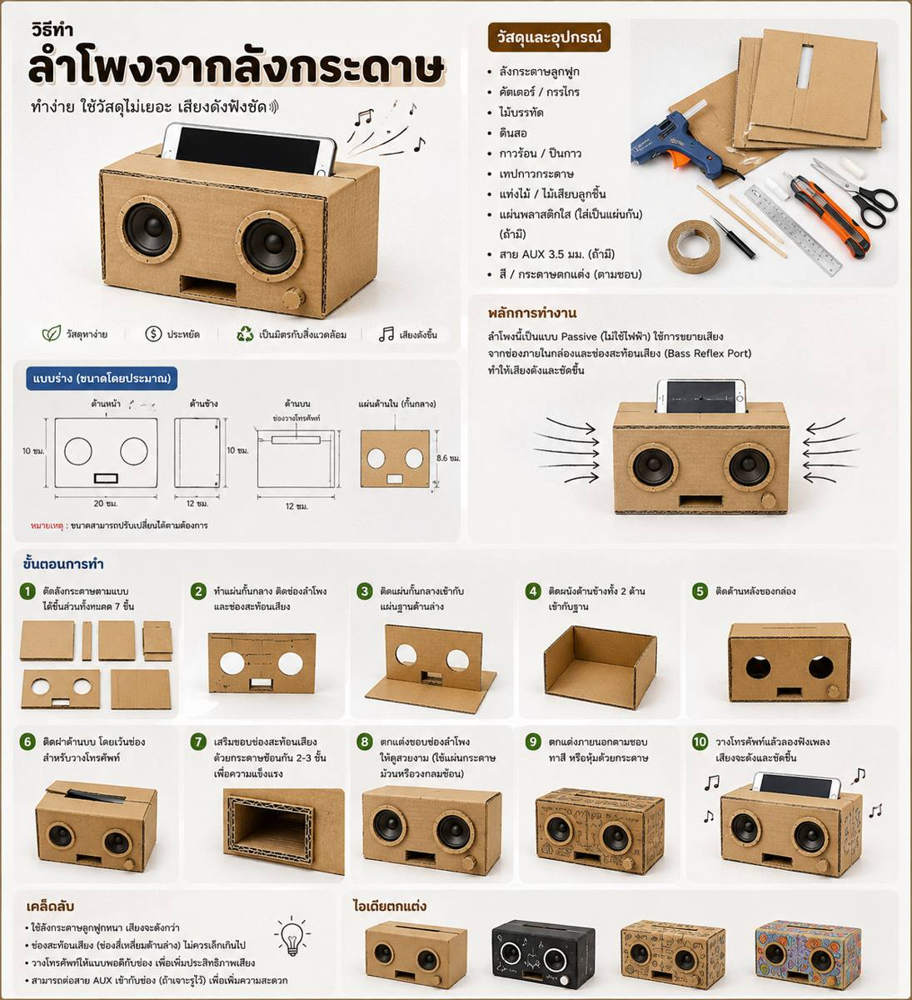

🔊 วิธีทำลำโพงจากลังกระดาษ
ลำโพงแบบ Passive สำหรับช่วยนำและกระจายเสียงจากโทรศัพท์
📋 วัสดุและอุปกรณ์
- ลังกระดาษลูกฟูก
- คัตเตอร์ / กรรไกร
- ไม้บรรทัดและดินสอ
- กาวร้อนหรือกาวลาเท็กซ์
- เทปกาว
- กระดาษแข็งสำหรับเสริมโครง
- สีหรือกระดาษตกแต่ง
📐 แบบร่างและภาพขั้นตอน

🔨 ขั้นตอนการทำ
1 ตัดชิ้นส่วน
วัดและตัดแผ่นด้านหน้า ด้านข้าง ด้านบน ด้านล่าง และด้านหลังตามแบบ
วัดและตัดแผ่นด้านหน้า ด้านข้าง ด้านบน ด้านล่าง และด้านหลังตามแบบ
2 ทำแผ่นหน้า
ตัดช่องสำหรับวางโทรศัพท์และช่องทางออกเสียง
ตัดช่องสำหรับวางโทรศัพท์และช่องทางออกเสียง
3 ทำฐาน
ติดแผ่นด้านในเพื่อสร้างช่องนำเสียง
ติดแผ่นด้านในเพื่อสร้างช่องนำเสียง
4 ประกอบกล่อง
ติดผนังด้านข้างเข้ากับฐานให้เป็นกล่อง
ติดผนังด้านข้างเข้ากับฐานให้เป็นกล่อง
5 ติดด้านหน้า
ติดแผ่นหน้าที่เจาะช่องลำโพงให้แน่น
ติดแผ่นหน้าที่เจาะช่องลำโพงให้แน่น
6 ทำช่องวางโทรศัพท์
เว้นช่องด้านบนให้โทรศัพท์วางได้พอดี
เว้นช่องด้านบนให้โทรศัพท์วางได้พอดี
7 เสริมขอบ
ใช้กระดาษแข็งซ้อน 2–3 ชั้นบริเวณขอบ
ใช้กระดาษแข็งซ้อน 2–3 ชั้นบริเวณขอบ
8 ตกแต่ง
ทาสีหรือติดกระดาษตกแต่งตามต้องการ
ทาสีหรือติดกระดาษตกแต่งตามต้องการ
9 ตรวจสอบ
เช็กทุกจุดให้แน่นและไม่มีรอยต่อหลวม
เช็กทุกจุดให้แน่นและไม่มีรอยต่อหลวม
10 ทดลองใช้
วางโทรศัพท์ เปิดเพลง และปรับตำแหน่งเพื่อหาเสียงที่ชัดที่สุด
วางโทรศัพท์ เปิดเพลง และปรับตำแหน่งเพื่อหาเสียงที่ชัดที่สุด
💡 เคล็ดลับ
ลำโพงนี้เป็นแบบ Passive จึงไม่ต้องใช้ไฟฟ้า แต่ไม่ได้เพิ่มกำลังเสียงแบบลำโพงอิเล็กทรอนิกส์ การทำกล่องให้แน่นและช่องนำเสียงเหมาะสมจะช่วยให้ได้ผลดีขึ้น